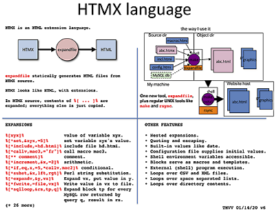

2016
The great top executives I've met are very sharp and think fast. Their time is precious; their job is making crisp decisions. Respect the value of their time, and use them for what they're good at: deciding.
I can remember being on committees in the 70s and 80s where we gave presentations to the top guys, beginning with background, members of the committee, goals, alternatives, history and process, etc., finally leading up to our conclusion. Several times, the boss guy was called out of the room before we got to the end. (Now I wonder if he had a secret button to signal his admin that he needed to be rescued.)
Sometimes, there would be some question you hoped, going into the meeting, that you wouldn't be asked: and the boss would interrupt and ask it, and then the planned presentation had to be suspended while you answered that question, in more and more detail, and you never got to the end of the slide deck to give your recommendation.
I concluded that slide one in the slide deck should be the conclusion. You may never get to slide two: slide one has to make your point. For a project proposal, or a sales pitch, it should say
Ideally, the boss looks at slide one, says "OK," and the meeting is over. You work out the details with staff.
If the person you're presenting to wants something else, or doesn't want to spend as much as you propose, there is no sense in wasting half an hour talking. If the proposal on slide one is acceptable, your later slides can support the cost and benefit estimates, show that you were thorough, and so forth.
If you get past slide one, slide two should say HOW TO DO IT. In three bullets. (Of course you have details to back up your cost and time estimates. Save them for later.)
Stating the conclusion first requires you to understand what the boss wants. That's your job. If you don't know what the boss wants, he has failed to communicate, or you have failed to listen. One way he can solve this problem is to spend precious time educating you. Another way is to get rid of you, and get somebody else.
(Notice that there is no title slide. Put your name and the date at the bottom of each slide.) The basic idea is that your presentation is not about you, it's about what your boss wants.
I worked at startups that encouraged project leaders to put together an "elevator pitch," a 30-second presentation based on the fantasy that you get on an elevator with a CEO or client, who asks you about your project.
I was taught that the elevator pitch should cover (1) what your team does, (2) what your value proposition is.
In practice, I think most CEOs and executives would tune out during the first sentence, as soon as they heard you telling them something they already know. Elevator pitches are too wordy, and focus on the presenter instead of the audience.
Instead, suppose you say, "My team could make us half a billion dollars' profit in 2 years."
Another one-slide presentation is popular with the US Department of Defense, NASA, and NOAA. It puts four sections on one slide, sometimes specifying the subjects to address. Here is one I made.

(click for a larger view)
Copyright (c) 2016-2026 by Tom Van Vleck